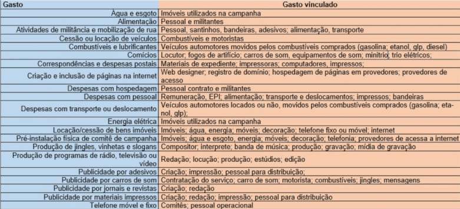

Os gastos de campanha acontecem após emissão dos recibos eleitorais, no CNPJ do candidato/partido durante período de campanha.
Deve-se observar os limites e critérios abaixo, sob pena de multa de 100% do valor ultrapassado ou não comprovado, mais abuso de poder.
Será considerado para o limite de gastos (R$ 1.270.629,01): todas as despesas contratadas, doações estimáveis recebidas e Transferências financeiras para outros candidatos/partidos nos seguintes prazos:
- Até 02/10 (dia da eleição)
- Entre 04/10 e 30/10 (segundo turno)
Gastos Eleitorais
Não existe campanha sem gasto!
- Propaganda por carro de som: Carreatas, caminhadas, passeatas, reuniões ou compícios.
- Impulsionamento de contéudo: Mensagens, imagens, texto ou outros conteudos para destaque positivo do candidato nas redes sociais.
- Produção de programas de TV, radio, vídeo: Normalmente é feito através de doação de estimável em dinheiro, financiado pelo majoritário ou partido
- Custo do financiamento coletivo de campanha
- Alimentação de contratados: 10% do gasto total
- Aluguel de veículos automotores: 20% do gasto total
Exemplos de gastos
Não entram como gasto de campanha
- Gastos pessoais do candidato (combustível, alimentação, telefone. Mesmo de motorista)
- Advogado e Contador (Opcional)
Gastos vedados
- Confecção, utilização, distribuição por comite, candidato, ou com a sua autorização, de camisetas, chaveiros, bones, canetas, brindes, cestas basicas, ou quaisquer outros bens ou materiais que possam proporcionar vantagem ao eleitor;
- Eventos fechados em propriedade privada, a presença de artistas ou de animadores nem a utilização de camisas e outros materiais que possam proporcionar alguma vantagem ao eleitor;
- Veiculação de propaganda eleitoral de qualquer natureza em veiculos automotores prestadores de serviços publicos, tais como os onibus de transporte coletivo urbano;
- Realização de showmicio e de evento assemelhado para promoção de candidatos, bem como a apresentação, remunerada ou nao, de artistas com a finalidade de animar comicio e reuniao eleitoral;
- Propaganda eleitoral mediante outdoors ou engenho assemelhado,inclusive eletronicos;
- Paineis eletronicos na propaganda eleitoral.
- Aluguel de bens particulars para veiculação, por qualquer meio, de propaganda eleitoral;
- Doaçoes em dinheiro, como tambem de trofeus, premios, ajudas de qualquer especie;
Formas de pagamento
- cheque nominal cruzado ao fornecedor do bem ou serviço;
- transference bancaria que identifique o CPF ou CNPJ do beneficiario/fornecedores;
- debito em conta;
- cartao de debito da conta bancaria;
- PIX (chave exigida: CPF ou CNPJ);
- Regra em dinheiro: despesas de pequeno valor (a meio salario-minimo, ou seja, R$ 612,00), utilizando-se o Fundo de caixa;
Despesa eleitoral não paga será constituido como dívida de campanha
Após o fim do prazo, permanecendo dívidas, poderá ser feito uma Assunção de Dívida com o Diretório Nacional seguindo os seguintes critérios:- acordo expressamente formalizado, no qual deverão constar a origem e o valor da obrigação assumida, os dados e a anuência do credor;
- cronograma de pagamento e quitação que não ultrapasse o prazo fixado para a prestação de contas da eleição subsequente para o mesmo cargo;
- indicação da fonte dos recursos que serão utilizados para a quitação do débito assumido.